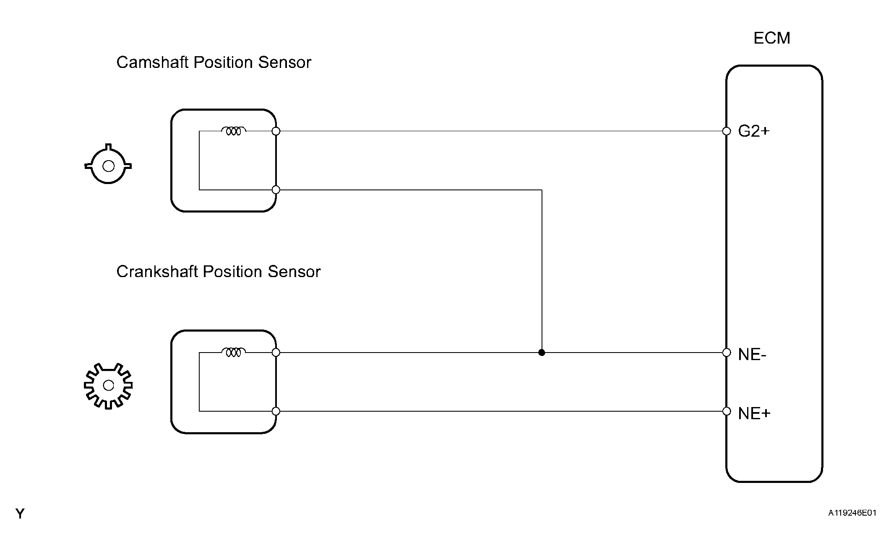

DTC P0335 Crankshaft Position Sensor "A" Circuit; DTC P0339 Crankshaft Position Sensor "A" Circuit Intermittent: Wiring Diagram
Fig 1: Identifying Wiring Diagram

Courtesy of © TOYOTA, LICENSE AGREEMENT TMS1002